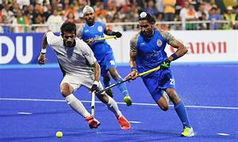

KCC Institute of Engineering and technology is committed to the overall growth of its students. It hosts numerous events, ranging from cultural fests to technical competitions, aiming to nurture skills, innovation, and creativity.
Key Activities
- Hackathons: Coding marathons encouraging innovative solutions to real-world problems.
- Technical Seminars: Talks by industry experts on AI, Machine Learning, and other emerging technologies.
- Sports Meets: Promoting teamwork and a healthy lifestyle through tournaments and challenges.
- Cultural Festivals: Events celebrating music, dance, drama, and art to showcase talents.
- Startup Competitions: Platforms to pitch innovative business ideas and foster entrepreneurship.
Event Gallery
A hackathon (also known as a hack day, hackfest, datathon or codefest; a portmanteau of hacking and marathon) is an event where people engage in rapid and collaborative engineering over a relatively short period of time such as 24 or 48 hours. They are often run using agile software development practices, such as sprint-like design wherein computer programmers and others involved in software development, including graphic designers, interface designers, product managers, project managers, domain experts, and others collaborate intensively on engineering projects, such as software engineering.
A seminar is a form of academic instruction, either at an academic institution or offered by a commercial or professional organization. It has the function of bringing together small groups for recurring meetings, focusing each time on some particular subject, in which everyone present is requested to participate. This is often accomplished through an ongoing Socratic dialogue[1] with a seminar leader or instructor, or through a more formal presentation of research. It is essentially a place where assigned readings are discussed, questions can be raised and debates can be conducted.
Sport is a form of physical activity or game. Often competitive and organized, sports use, maintain, or improve physical ability and skills. They also provide enjoyment to participants and, in some cases, entertainment to spectators. Many sports exist, with different participant numbers, some are done by a single person with others being done by hundreds. Most sports take place either in teams or competing as individuals. Some sports allow a "tie" or "draw", in which there is no single winner; others provide tie-breaking methods to ensure one winner. A number of contests may be arranged in a tournament format, producing a champion. Many sports leagues make an annual champion by arranging games in a regular sports season, followed in some cases by playoffs.

A college fest provides a platform to showcase the unique culture of the college. Students can exhibit their talents and skills in various competitions, and cultural events showcase the diverse backgrounds of the students. It helps in fostering a sense of pride and belongingness towards the college.
Startup competitions are competitive events where entrepreneurs pitch their startup or startup idea, typically to a group of investors, coaches, or mentors, as well as the media.